Афиша
учреждения культуры
Планируйте свой досуг в Ельце с помощью нашей единой афиши! Здесь собраны все предстоящие события: спектакли, концерты, выставки и фестивали от городских учреждений культуры. Не ищите информацию по разным сайтам — актуальное расписание всегда под рукой.
подробнеефестивали
В Ельце вы найдете праздник в любое время года! Насладитесь историческими реконструкциями весной, отпразднуйте летние рок и этнофестивали, осенью посетите «Антоновские яблоки», а зимой — новогодние торжества. Полная афиша всех мероприятий доступна на нашем сайте.
подробнее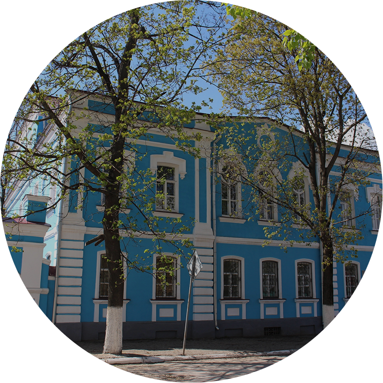
Музей елецкого кружева
В этом музее представлены уникальные старинные и современные кружевные изделия, которые поражают своей красотой и изяществом. Здесь можно узнать историю этого знаменитого промысла, прославившего Елец далеко за его пределами.
Экскурсии
С гидом
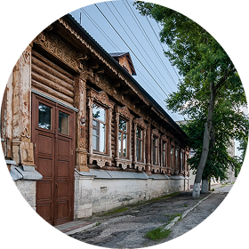
Купеческий край
Знакомство с елецким купечеством. Осмотр старинных особняков XIX века
подробнее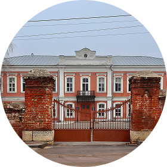
По следам Бунина
Прогулка по улицам и домам, где прошли гимназические годы Ивана Бунина.
подробнее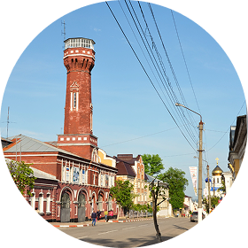
Дыхание старины
Обзорная прогулка по историческому центру с посещением разных мест города.
подробнее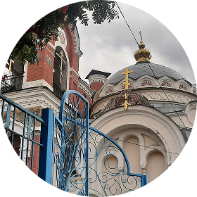
Храмовое ожерелье
Посещение ключевых храмов и места с панорамой на город и реку Сосну.
подробнее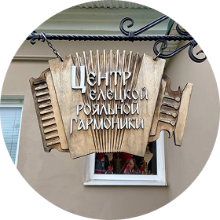
Музыка Ельца
Экскурсия по местам, связанным с жизнью и творчеством композитора Хренникова.
подробнее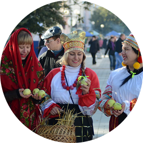
Город мастеров
Экскурсия с демонстрацией старинных ремёсел и созданием своего сувенира.
подробнееАвтомаршруты
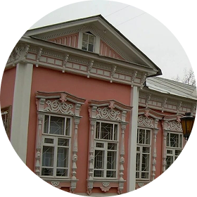
Купеческий маршрут
Показывает роскошные особняки, оставшиеся от купеческого Ельца.
подробнее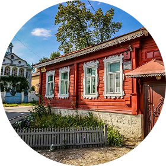
Культурный след
Маршрут по местам, связанным с жизнью известных уроженцев Ельца.
подробнее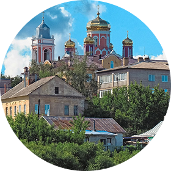
Панорамный тур
Великолепный маршрут с лучшими видовыми площадками на город и реку Сосну.
подробнее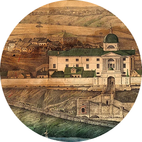
Исторический вектор
Поездка от древнего городища до ключевых мест военной истории города.
подробнее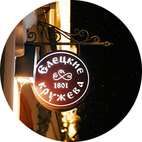
Город мастеров
Объезд мест, где можно увидеть традиционные ремёсла и знаменитое кружево.
подробнее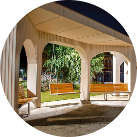
Зелёный маршрут
Прогулка по самым живописным паркам и скверам Ельца на автомобиле.
подробнееЛюдмила
Елец оставил у меня самые тёплые и сильные впечатления! Этот древний город, упомянутый ещё в 1146 году, буквально дышит историей на каждом шагу. Особенно впечатлил грандиозный Вознесенский собор — его величие завораживает. В доме-музее Бунина я прочувствовала ту самую атмосферу уездной России, позже ожившую в его книгах. А знаменитое елецкое кружево — это настоящее чудо тонкой работы, я привезла воздушную салфетку как лучший сувенир. Главное же — это сама атмосфера: прогулка по тихим мощёным улочкам, вид старинных купеческих особняков дают непередаваемое чувство покоя. Елец не просто показывает историю, а позволяет её ощутить, стать её частью. Это место настоящей, подлинной России, куда хочется возвращаться снова и снова.